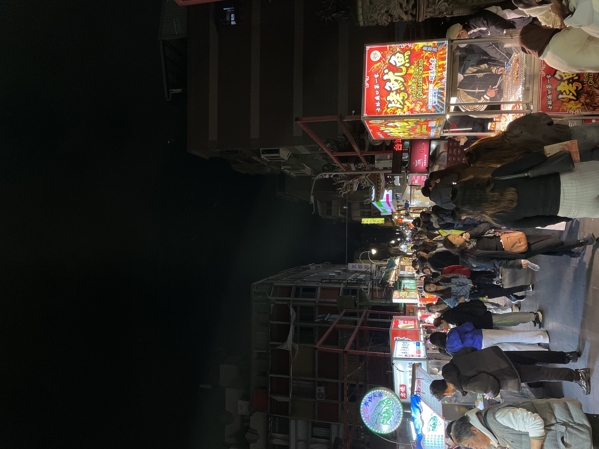
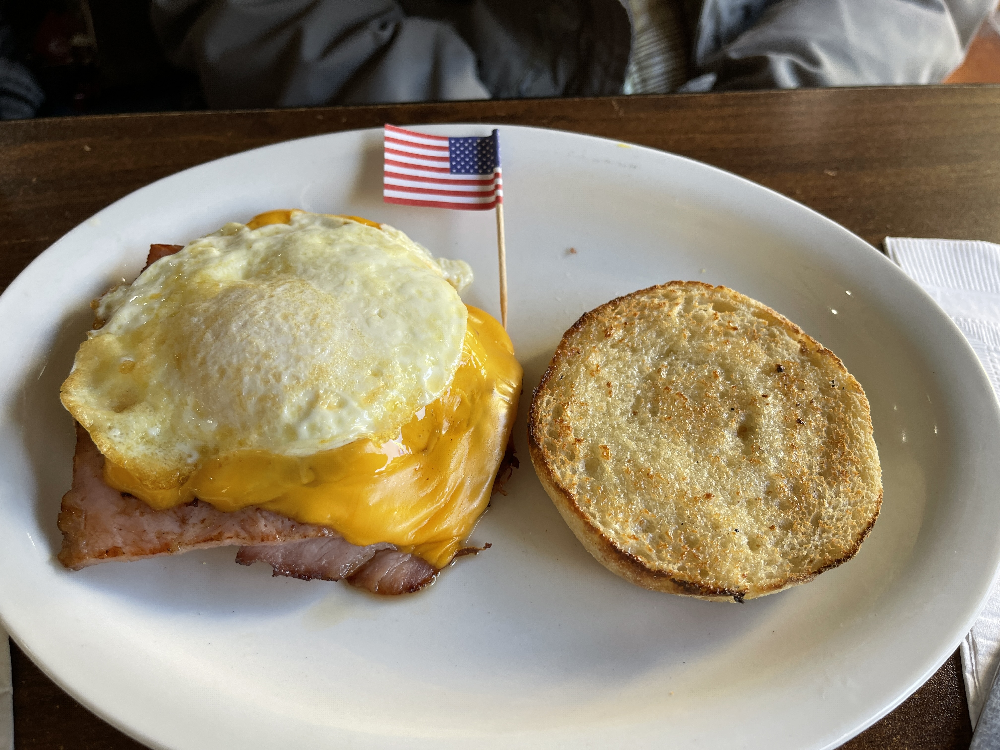

Top 5 Travel Destinations
- Japan
- Taipei, Taiwan
- Hong Kong
- England
- Lake Tahoe
I've been to Tokyo, Osaka, Fukuoka, Kyoto, Nagasaki, and Kumamoto. Out of all the cities I've been to in Japan, my favorite would be Fukuoka because the city felt more quiet and slow with a blend of modern and historical to it. There weren't many tourists there (from what I noticed) which made exploring the city more enjoyable. The best food I had in Fukuoka was the sashimi with my favorite being the mackerel because of the texture.
Taipei's nightmarkets are one of my favorite parts of the city. Although the architecture is older than Osaka's, there is still a lot of great things around. The city and culture felt more fast paced than America.Taiwanese food is delicious; my favorite thing I ate there was the sticky rice rolls with pork floss inside. They are also known for their beef stew noodle soup with many of them having hand-pulled noodles and a flavorful broth. While we were there, we went to the NBA Store, a store dedicated to selling NBA merch; I have not seen a store like that in America.

Hong Kong, where my family is from, is on my list because of the food. Whenever we go to Hong Kong, I always end up eating so much; mainly having dim sum whenever we go out around noon. From the street food to sit-down restaurants, Hong Kong Food will always be my go to. While there are many other positives, the one downside is that it gets really hot and humid during the summer. Overall, while I may be biased, Hong Kong is still one of my favorite places to go.
England was nice to travel to because of the blend of historical and modern architecture. Walking through cities like London and the town of Chester made me admire the contrast in the two. The weather was hot as we had traveled there during the heart of the summer season. What made it even worse was that there was no air conditioning anywhere. Despite the lack of cooling, I still enjoyed traveling here.

Lake Tahoe continues to be one of my favorite places to visit because of its natural beauty. The clear waters, combined with tall pine trees create a peaceful environment that is completely different from city-life. Whether I am hiking along the trails or sitting by the lake, there is always something new that I've never experienced. I am always excited to return whenever I can.
Top 5 Foods
I have many favorite foods from a range of cultures. Starting from Japanese cuisine and ending with Italian, I enjoy foods from all over the world. I don't think I'm a picky eater because I will eat almost everything. Lets begin the list off with my frist favorite food!
- Sashimi
- Omelettes and Scrambles
- Any Type of Pasta
- Anything Noodles
- Breakfast Foods
Sashimi is one of my favorite foods because I rarely get to eat it due to the price. My favorite aspect of sashimi is the texture of the fish; I lean more towards firmer fish such as mackerel and yellowtail. I am also a fan of the minimal prep that goes into the dish; without a lot of prep, the real flavor of the fish is highlighted. If I had the money, I would have sashimi a lot more and go to places with the highest quality cuts.
I am a huge fan of omelettes and egg scrambles because of the customization and flavors that are in everyone of them. You can add almost anything to them and they still taste great. I usually lean more towards an omelette with ham, sausage, or bacon in it because the flavor usually blends with the egg. From a basic cheese omelette to a loaded scramble with vegetables, meats, and seasonings, I will always order one at breakfast and brunch locations.
I love pasta because it is the perfect combination of flavor and texture. I tend to lean more towards red sauce over white sauce because it doesn't feel as heavy to me. The variety of shapes and sauces means there is always something new to try and makes it impossible to find it repetitive. It also doesn't take too much time to make which makes it my go to meal when I want something that tastes good without too much effort.
From stir-fry to soup, I am a large noodle lover. I grew up eating a lot more rice dishes than noodle dishes which has made me lean more towards noodles. I am also a large texture eater which makes me enjoy noodles a lot more. There’s something about the texture that makese every dish satisfying. One of my favorites is Hong Kong style satay beef instant noodle because of the falvorful broth and nostalgia I get when I have them. Another go-to is ramen because of the simplicity and the flavor-packed broth. If there are noodles on the menu, then I am definitely ordering them.

Not only are omelettes one of my favorite foods, but breakfast foods in general are on my list. There is something comforting about a warm, hearty breakfast to start the day (even though I rarely eat breakfast) Whether it is a classic omelette, a fluffy stack of pancakes, or a perfectly crisp piece of toast with jam, breakfast food is always delicious. I will often have these on the weekend because I don't have time to eat in the morning during the week.
